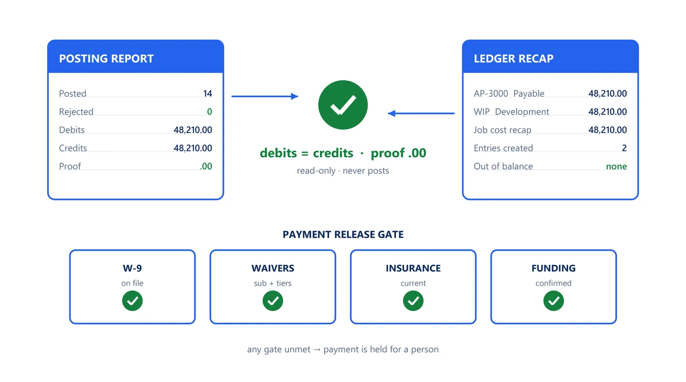

2,2231
Tests
the collected checks that pin this engine's behavior
ENGINE 10
SFS-E10-APX · PAYABLES CONTROLS · REV 2026-07-21 · PRODUCTION
PRODUCTION = runnable end-to-end, CI-backed, full test suite passing. All data fictional and seeded.
The payables cycle proved rather than assumed
Accounts payable is where controls are asserted most often and proven least often. This engine reads the fixed-format posting artifacts the cycle already emits and runs thirty deterministic controls over them: did the post actually happen and balance, is this payment allowed to be released yet, is every job routed to a valid approver chain with duties segregated, and will year-end information reporting be complete. It never posts, never pays, and never writes to a source artifact. Every exception it raises ends at a person.
A control engine is only credible if it can be wrong in public. This one ships the defects it claims to catch: one planted defect per registered control, each of which must trip its own control and leave the other twenty-nine silent. The benchmark is a command, not a claim.
Six control families run in registry order over each document set. The first proves the others had something to read.
Three payables failures recur across the industry and all three are invisible to the people running the cycle. A posting run aborts on batch contention and is filed as though it succeeded -- the report still balances, because nothing moved. A payment is released through an open compliance gate: no taxpayer certificate on a first payment, waivers missing from a subcontractor's lower tiers, insurance expired before the payment date. And a routing matrix drifts until a job maps to no workflow, or one person holds both data entry and final review. Each is deterministic to detect from artifacts that already exist, and none of them needs a model's judgment.
The seeded demo runs every control over every document set7. The CLI generates thirty-one fictional document sets -- one clean baseline plus one planted defect per control -- and runs all thirty controls over each. The clean set reports PASS with every control held; each defective set reports the exact control it was built to trip. The run exits 2 because the corpus deliberately contains failures.
Absent evidence must not read as a passing control8. One fixture removes an entire artifact type from its document set. Every control that reads that artifact returns nothing, which without a structural precondition would render as a clean result. The set_complete control is registered first and fails the set, so the report opens with proof that the controls below it had something to read.
Every control must prove both of its sides9. Each of the thirty controls is exercised against its own planted defect, which it must catch, and against the clean baseline, where it must stay silent. A coverage test asserts the planted-defect set and the registry are the same set, so a control cannot be added without a fixture that exercises it, and an implementation that always passes or always fails cannot satisfy the suite.
| Command | Operation | Output | Exit | Artifacts |
|---|---|---|---|---|
python run.py | generate the seeded fictional corpus, run all thirty controls, write both artifacts | per-document-set verdicts and every actionable finding, then the overall verdict | 2 for the bundled corpus, which carries one planted defect per control | ap_report.md, ap_report.json, samples/ |
python -m ap_engine ./samples | analyze an existing folder of document sets, read-only | per-document-set verdicts and findings | 0 PASS, 1 REVIEW, 2 FAIL, 3 usage or IO error | none |
python -m ap_engine ./samples --quiet | print only the overall verdict line | a single overall verdict line | 0 PASS, 1 REVIEW, 2 FAIL, 3 usage or IO error | none |
python -m pytest -q | run the curated suite exactly as CI does | 2,223 passed | 0 | none |
| Measure | Result |
|---|---|
| Engine tests10 | 2,223 tests collected live collection from the engine directory |
| Curated invariant grid11 | 1,977 parametrized cases bounded arithmetic and verdict identities, asserted exactly over integers |
| Planted-defect cases12 | 152 cases every control against its own defect and against a clean baseline |
| Opt-in property sweep13 | 99,223 tests collected the exhaustive grid, gated behind SWEEP=1 so it never slows CI |
The engine has no write path and therefore no autonomy to gate. A verdict is an input to a person's decision, never a substitute for it: posting, payment release and approval all remain outside the engine, and no finding it raises is actioned without review.
Deterministic envelope. seeded fictional inputs, read-only operation, offline default mode.
Demo gate. FAIL on the bundled corpus, by design -- it carries one planted defect per control
| Severity | Verdict | Action |
|---|---|---|
| No findings above PASS | PASS | send the mechanically clean result to the documented manual gates |
| One or more FLAG, no FAIL | REVIEW | route the flagged items to a person for judgment; do not treat as cleared |
| One or more FAIL | FAIL | hold the affected posting or payment and resolve at source before re-running |

Distribution: public repository, MIT license.
One conversation: you describe the work that consumes your team's month; we tell you plainly what this engine can take over, what it can't, and what a scoped first phase would cost. Your people keep approval authority.
Book a free consultation